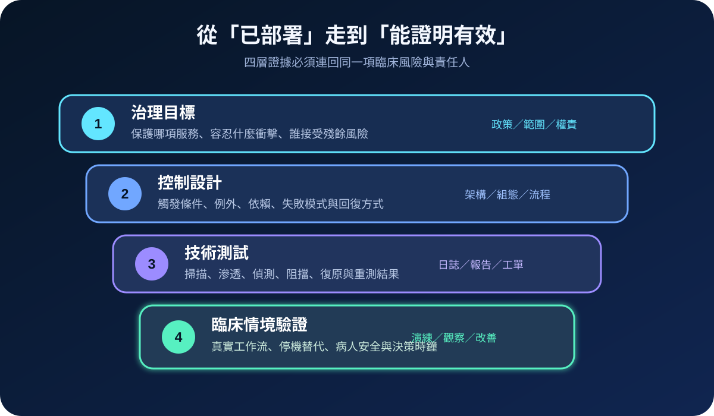
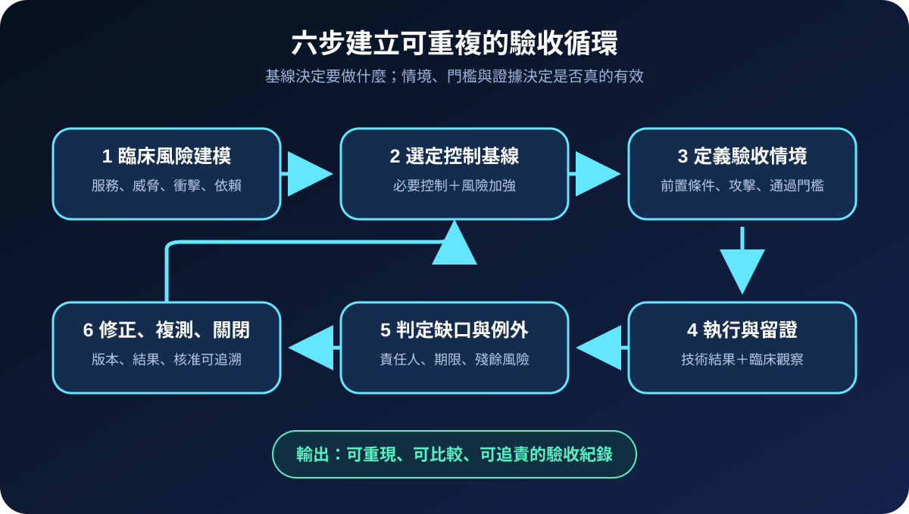
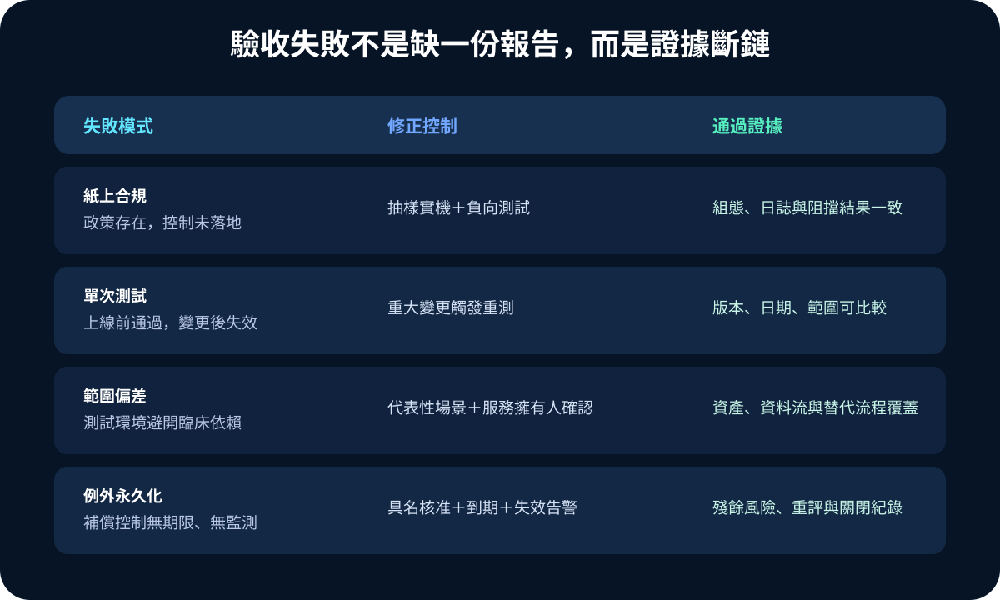

醫療資安國際觀察 · 2026-08-31
醫療資安控制如何證明有效：從基線到臨床情境驗收
作者：Dr. William｜醫療資訊與資安治理實務工作者
醫院完成控制清單，不代表控制在攻擊與臨床壓力下仍然有效。可驗收的治理必須把保護目標、組態、測試結果、臨床情境與殘餘風險連成同一條證據鏈。
名詞解釋：基線、控制有效性與保證證據
control baseline 是組織優先實施的一組最低控制；design effectiveness 檢查控制設計是否能處理指定風險，operating effectiveness 則確認控制在實際環境持續運作。assurance evidence 可包含核准政策、組態快照、偵測日誌、測試報告、演練觀察及複測紀錄。證據必須標示範圍、版本、日期、責任人與通過門檻，才能重現與比較。
國際現況與適用邊界
美國 HHS 的 Healthcare and Public Health Cybersecurity Performance Goals 將醫療控制分為 Essential 與 Enhanced Goals，定位為醫療機構可優先採用的自願性高影響實務。CISA CPG 2.0 同樣屬跨產業自願性基線，並要求驗證控制是否正確設定、按預期運作。FDA 醫療設備資安頁面於 2026 年 6 月列入 MDIC 的醫療設備滲透測試最佳實務，強調以範圍、方法、結果及修正資訊支援生命週期風險管理。
法域與效力：HHS 與 CISA 的 CPG 是美國自願性實務，FDA 資料主要面向美國醫療設備監理與產業，不是台灣醫院的法定控制清單。台灣醫療機構可採其風險排序與證據方法，但實際控制、測試深度及核准權責仍須依本地法規、主管機關要求、契約與臨床風險決定。
規劃：先定義要證明什麼
每項控制應連到具名服務與風險情境，例如「遠端維運帳號失陷後，能否阻止未授權變更並在時限內告警」。範圍需列出資產、資料流、第三方、臨床依賴及排除項；角色至少包含控制擁有人、獨立驗證者、臨床服務負責人與風險核准者。驗收指標可採控制抽樣覆蓋率、負向測試通過率、偵測與阻擋時間、重大變更後重測率、逾期例外數及改善關閉率。

實作：建立可重複的測試與核准流程
- 建模：記錄服務、威脅、臨床衝擊、控制依賴與可接受殘餘風險。
- 選基線：以 HHS、CISA 或適用標準建立起點，再依院內情境增補。
- 寫情境：定義前置條件、攻擊步驟、預期阻擋、告警、回復及通過門檻。
- 安全測試：在核准範圍執行組態檢查、負向測試、滲透測試或演練，預先設定停止條件與回復方式。
- 判定：由控制擁有人修正，驗證者重測；例外需記錄理由、補償控制、到期日與核准者。
- 持續化：重大變更、威脅改變、事件或證據過期時自動觸發重測。
風險：漂亮報告可能掩蓋無效控制
常見失敗包括只查政策、不做負向測試；測試環境缺少真實臨床依賴；由建置者自行判定通過；測試造成服務衝擊；以及例外長期沒有重評。高影響系統應安排獨立驗證、代表性情境、安全停止條件及臨床監看，並將未覆蓋範圍明確列為限制。

可執行清單
- 每項高影響控制是否連到具名臨床服務與風險情境？
- 驗收前是否已定義範圍、排除項、通過門檻與停止條件？
- 是否同時保存設計、組態、技術結果及臨床觀察證據？
- 重大變更、事件或證據過期是否自動觸發重測？
- 例外是否有具名核准、補償控制、監測、期限與關閉條件？
- 驗證者是否具備足夠獨立性，且結果可由第三人重現？
來源
- U.S. HHS｜Healthcare and Public Health Cybersecurity Performance Goals（網站內容更新：2026-06-10；查閱：2026-08-31）
- CISA｜Cybersecurity Performance Goals 2.0（查閱：2026-08-31）
- U.S. FDA｜Cybersecurity（列入醫療設備滲透測試新資源：2026-06-29；查閱：2026-08-31）
- Medical Device Innovation Consortium｜Validate Medical Device Cybersecurity with Industry-Leading Penetration Testing Best Practices（發布：2026-06-29；查閱：2026-08-31）
內容說明
本文依健康台灣深耕計畫相關治理內容整理，並參考 HHS、CISA、FDA 與 MDIC 公開資料，提出台灣醫療機構可採用的控制證據化驗收框架；不取代主管機關正式公告、法律意見、設備製造商指示或個案臨床決策。